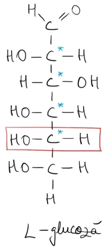
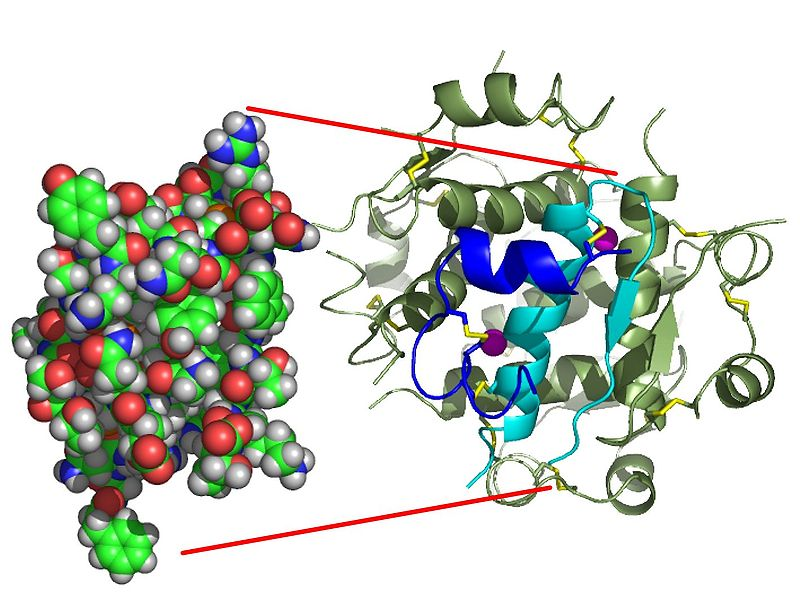
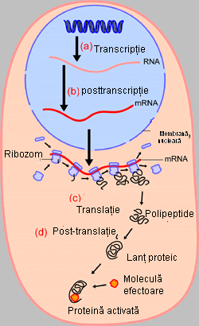

Compusi organici cu importanta biologica:
Zaharide-glucoza

Glucoza este compusul organic, aparținând clasei zaharidelor, care are formula chimică C6H12O6. Deși are aceeași formulă chimică, fructoza este diferită față de glucoză prin modul de legare a atomilor. Astfel, glucoza are o singură grupare de alcool primar (în imagine, la carbonul cu numărul 6), pe când fructoza are două grupări de alcool primar.
Glucoza conține șase atomi de carbon și o grupă carbonil (specifică aldehidelor) și este numită uneori aldohexoză. În natură, în unele plante, glucoza există sub formă de structură aciclică; în altele, ea poate fi găsită sub formă ciclică. Teoretic, structura ciclică a glucozei apare în urma interacțiunii dintre grupa carbonil și grupele hidroxil de la carbonii cu cifrele 4 și 5. Aceste interacțiuni sunt reacții de adiție a grupelor hidroxil amintite la grupa carbonil. În soluție apoasă, cele două forme se află în echilibru, și la un pH 7, forma ciclică este predominantă.
La formarea structurii ciclice a glucozei, apare la fosta grupă carbonil o nouă grupare hidroxil, care se numește hidroxil glicozidic și care are o reactivitate mai mare decât celelalte grupe hidroxil din moleculă. În acest caz, numerotarea carbonilor începe de la primul carbon de după oxigenul din ciclu, în sens orar.
Glucoza are patru centre optice, deci teoretic glucoza poate avea 16 stereoizomeri optici. Doar șapte dintre aceștia sunt găsiți în natură, iar dintre ei, cei mai importanți sunt galactoza (Gal) și manoza (Man). Acești opt izomeri (incluzând și glucoza) sunt toți diastereoizomeri unul față de celălalt și aparțin seriei-D.
În cazul glucozei (dar și al fructozei, în mod echivalent), un alt centru asimetric la carbonul 1 (numit carbonul anomeric) este creat când glucoza trece în forma ciclică și se formează două structuri inelare, numite anomeri (un caz particular de izomeri) — α-glucoza și β-glucoza. α glucoza este acea structură a glucozei în care grupele hidroxil de la carbonii cu numerele 1 și 4 se află de aceeași parte a planului ciclului hexagonal, iar β glucoza este structura în care cei doi hidroxili se află de părți diferite ale planului. Formele α și β pot trece dintr-una în alta în soluție apoasă pe o perioadă de câteva ore, stabilizându-se la un raport α:β 36:64
Proprietăți fizice
Glucoza este o substanță solidă, cristalizată, incoloră și solubilă în apă. Are un gust dulce. Punctul său de topire este foarte ridicat, deoarece între numeroasele sale grupări hidroxil(-OH) se formează multe legături de hidrogen. Când sunt încălzite, toate monozaharidele (nu numai glucoza) se descompun înainte de a se topi, în carbon și apă, reacție numită carbonizare. Glucoza are 75% din puterea de îndulcire a fructozei (care este luată ca unitate).
Proprietăți chimice
Reacții la grupa carbonil
Reacții comune aldehidelor și cetonelor
În această reacție se adiționează o moleculă de hidrogen diatomică la o moleculă de glucoză, adiția având loc la dubla legătură dintre oxigen și carbon. Legătura π dintre cei doi atomi se rupe, iar câte un atom de hidrogen se leagă la fiecare dintre ei și astfel se produce hexitolul (sorbitol).
Proteine

Proteinele sunt substanțe organice macromoleculare formate din lanțuri simple sau complexe de aminoacizi; ele sunt prezente în celulele tuturor organismelor vii în proporție de peste 50% din greutatea uscată. Toate proteinele sunt polimeri ai aminoacizilor, în care secvența acestora este codificată de către o genă. Fiecare proteină are secvența ei unică de aminoacizi, determinată de secvența nucleotidică a genei.
Proprietățile fizice
Proteinele sunt substante incolore ( exceptie: cromoproteinele), insolubile in solventi organici, cusolubilitati diferite in apa si in solutii de electroliti.Proteinele solubile precipita cu acizi mineraliconcentrati, cu saruri de metale grele, cu solutii de alcooli sau de alti solventi organici.
La incalzire proteinele coaguleaza, procesul fiind ireversibil si pierzandu-se valoarea biologica aacestora. Unele proteine coaguleaza de la 38˚ C, altele inca mai sunt stabile la 75˚ C. Aceasta coagulareireversibila (denaturare) se mai produce si daca expunem proteinele la actiunea razelor U.V., a razelor X sau a razelor γ (gamma). Unele saruri de metale grele denatureaza deasemenea proteinele. Pierdereavalorii biologice a proteinelor in cadrul procesului de denaturare se datoreaza modificarilor ireversibile instructura tertiara si cuaternara a acestora.Ca si aminoacizii, proteinele au grupari COO si grupari -NH3+, precum si o valoare a pH-uluiunde sarcina globala este nula ( punct izoelectric), iar proteina nu migreaza in camp electric. La alte valoride pH, proteinele migreaza in camp electric in functie de sarcina lor electrica si de masa lor moleculara.Proteinele incarcate + vor migra mai mult sau mai putin spre polul ( catod), iar cele incarcate vor migra spre polul + (anod). Aceasta proprietate a proteinelor de a se separa in camp electric se numeste electroforeza. Prin electroforeza proteinele din ser se separa in 5 fractiuni: albumine, globuline α 1 ,globuline α 2, globuline γ , globuline β.
Biosinteza proteinelor

Prima etapa in sinteza proteinelor este sinteza aminoacizilor neesentiali. „Materiile prime” sunt produsii de degradare ale lipidelor si glucidelor, dintre care un rol esential il are acidul glutamic. Acesta participa la reactii de transaminare ( = reactii biochimice in care 2 molecule isi schimba reciprocgruparile functionale amino (– 2 ), respectiv C=O ( ceto) , formandu-se un alt aminoacid si un altcetoacid decat cei initiali). Aceste procese au loc in primul rand in ficat si in inima.A doua etapa consta in reactii ale aminoacizilor intre ei cu formarea lanturilor caracteristice peptidelor si proteinelor. Aceste sinteze au loc in celule. Fiecare celula capabila sa sintetizeze o proteinacontine o matrice a acelei proteine individuale. Procesul de biosinteza decurge in 3 etape principale: